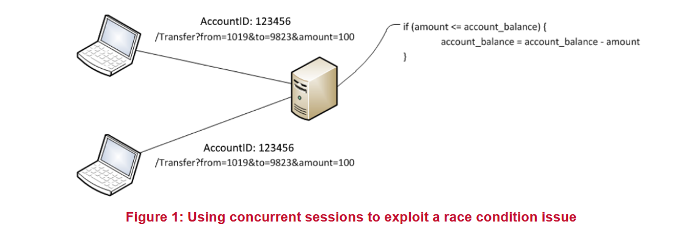

Это распространенная уязвимость в электронных коммерческих приложениях, которые хранят балансы пользователей и позволяют переводить деньги или совершать одновременные покупки.
Рассмотрим следующий пример, часто встречаемый NCC Group [1]. Пользователь аутентифицирован в финансовом приложении с двух разных устройств. Выполняется транзакция перевода £100 с банковского счета 1019 на счет 9823.
Предположим, серверный код следующий, и баланс пользователя составляет £100:
1: if (amount <= account_balance) {
2: account_balance = account_balance – amount
3: }

Если запрос на перевод может быть отправлен дважды в веб-приложение одновременно, есть вероятность, что строка 1 в коде выполнится дважды до выполнения строки 2. Если это произойдет, то первая проверка, что £100 <= £100, будет верной дважды, и при выполнении блока if значение account_balance уменьшится на £100 дважды, что означает, что пользователь смог перевести больше денег, чем разрешено (как указано в условии if в исходном коде).
Эту проблему можно эксплуатировать, написав простой многопоточный код, использующий несколько действительных сеансов для одного пользователя (например, имитируя одновременные входы на нескольких устройствах). В некоторых случаях возможно эксплуатировать это даже с использованием одного сеанса, когда запросы могут обрабатываться приложением одновременно. Последствия могут быть серьезными, в зависимости от характера приложения, так как это открывает возможность кражи или использования несанкционированных сумм денег и предоставляет потенциальный механизм для мошенничества и других отмывочных операций.
Эта проблема может встречаться во многих финансовых приложениях, таких как банковские приложения, позволяющие переводить деньги между несколькими счетами, интернет-магазины, где пользователь может покупать несколько товаров одновременно, или коммерческие веб-сайты, позволяющие пользователям зарабатывать и переводить свои бонусные баллы.
Некоторые приложения могут даже предотвращать отрицательное значение на счету пользователя, заменяя отрицательные значения на 0. Если бы приложение в приведенном выше примере имело такую функцию, пользователь потенциально мог бы получить £100.
Проблемы параллелизма также могут затрагивать коды скидочных купонов, которые можно использовать только один или два раза. В результате может быть возможно использовать одноразовый промокод несколько раз, эксплуатируя эту уязвимость.